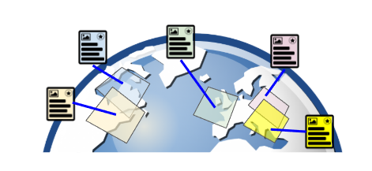
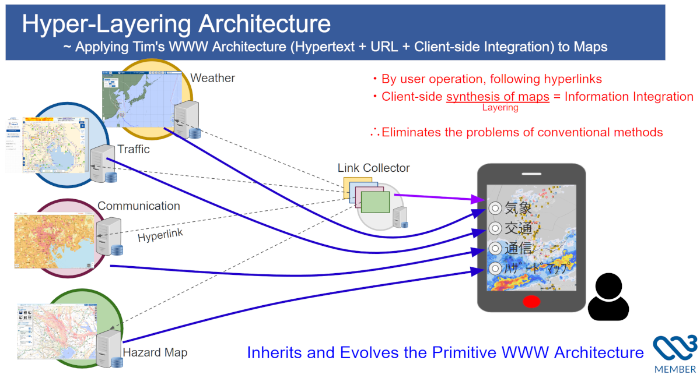
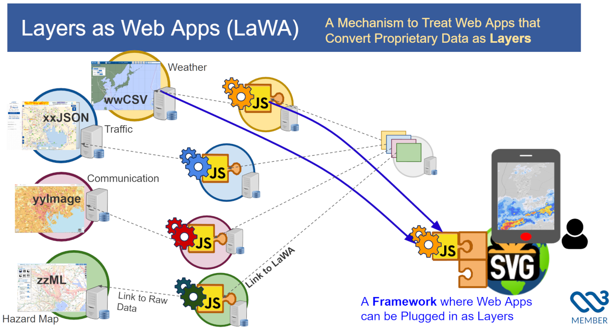

Copyright © 2025 the Contributors to the Hyper-Layering Architecture (HLA) Community Report, published by the Maps For HTML Community Group under the W3C Community Contributor License Agreement (CLA). A human-readable summary is available.
This document is a Community Group Report draft intended to introduce the Hyper-Layering Architecture (HLA) as a topic of discussion within the Maps for HTML Community Group.
It is not a specification proposal, nor does it seek immediate standardization. Its primary purpose is to provide shared context, including the philosophical motivation, historical background, and references to existing implementations and materials related to HLA.
This report is published in the Maps for HTML Community Group following recent W3C discussions, where it was agreed that existing CG infrastructure provides an appropriate venue for architectural exploration related to maps on the Web.
This report was published by the Maps For HTML Community Group . It is not a W3C Standard nor is it on the W3C Standards Track. Please note that under the W3C Community Contributor License Agreement (CLA) there is a limited opt-out and other conditions apply. Learn more about W3C Community and Business Groups.
This document is a Community Group Report draft intended to introduce the Hyper-Layering Architecture (HLA) as a topic of discussion within the Maps for HTML Community Group.
It is not a specification proposal, nor does it seek immediate standardization. Its purpose is to provide shared context: philosophical motivation, historical background, and references to existing implementations and materials.
This report is published in the Maps for HTML Community Group following recent W3C discussions, where it was agreed that existing CG infrastructure provides an appropriate venue for architectural exploration related to maps on the Web.
Web mapping has made remarkable progress over the last two decades. However, much of this progress has occurred through centralized services, proprietary frameworks, and siloed web applications.
While these approaches enable rich functionality, they also weaken two foundational principles of the World Wide Web:
The Hyper-Layering Architecture (HLA) originates from a long-running attempt to reconcile maps with the original Web architecture: hyperlinks, distributed authorship, and integration performed by the user agent.
HLA asks a simple but far-reaching question relevant to the Maps for HTML CG:
At the conceptual core of HLA is the idea of "mapping the Web itself." Rather than treating maps as isolated content within web pages, HLA envisions the entire Web as a single, interconnected spatial canvas — a "One Web Map" where all information and services can be connected through a common spatial context.

At its core, HLA treats layers as first-class Web resources identified by URLs and combined dynamically by the browser. This shift in perspective moves away from monolithic map applications toward a more granular and distributed model.
The key principles of this architecture are as follows:
This approach directly inherits the original World Wide Web model—hyperlinks + user-agent integration—and applies it systematically to geospatial content.

Note: The discussion in this section is based on the first half of Slide 1 from the materials prepared for the HLA breakout session at TPAC 2025. [[HLA-TPAC2025]]
The original concept of hyper-layering was conceived in 1996, following discussions on disaster information sharing after the Great Hanshin–Awaji Earthquake. The inability to freely overlay heterogeneous disaster-related maps from different organizations revealed a structural interoperability problem that could not be solved by existing centralized GIS models.
The realization of Hyper-Layering Architecture requires that map content be associated with geographic coordinate systems, so that independently authored layers can be aligned and composed by the user agent.
From the early 2000s, HLA development therefore focused on SVG-based mapping, anticipating SVG as a browser-native, interoperable map format capable of carrying such geospatial semantics.
Key milestones during this period include:
Traces of this work remain visible in SVG specifications today, including geographic coordinate handling in SVG 1.1 [[SVG11-GEOR]] and SVG Tiny 1.2 [[SVGT12-GEOR]].
During SVG 2 development, HLA-related requirements influenced features such as Vector Effects [[SVG2-VE]] , particularly for cartographic annotations and non-scaling symbols.
Despite this, browser-level standardization of a complete map architecture proved impractical at that time. This period clarified an important lesson for the community:
After the 2011 Great East Japan Earthquake, the limitations of centralized cloud-based map mashups became evident, particularly in their flexibility to handle diverse and rapidly changing data sources in crisis situations. As a result, HLA evolved into HLA 2.0, also known as Layers as Web Apps (LaWA).
In the LaWA model:
svgmap.js [[svgmap-js]]) provides a common geospatial canvas to integrate these independent applications.Because early attempts to realize HLA through Web standardization were not successful, the Web platform itself still does not provide a shared geospatial canvas that independent layers can rely on. As a result, HLA 2.0 necessarily requires a framework to emulate this missing capability. The svgmap.js framework, developed as open source, was created to fulfill this role. At this stage, LaWA therefore has to be implemented as specialized Web applications designed to run within this framework.

The LaWA approach, powered by svgmap.js [[svgmap-js]] , has been rigorously tested and validated through extensive real-world application:
While LaWA demonstrated that large-scale, heterogeneous map integration is entirely feasible without central aggregation. Thanks to the hub-and-spoke, weakly coupled architecture of LaWA, the effort required to add new layers grows only linearly, enabling a scale of heterogeneous, cross-origin integration that was not achievable with conventional Web mapping architectures. In this sense, HLA 2.0 represents a substantial and unprecedented success in decentralized map composition.
At the same time, this linear human cost still constitutes a fundamental scalability limit. HLA 2.0 therefore demonstrates both the practical viability of large-scale decentralized map integration and the structural boundary imposed by its framework-based realization.
Note:
The concepts described in this section, including the evolution toward HLA 2.0, are presented in the second half of Slide 1 and in Slide 2 of the materials prepared for the HLA breakout session at TPAC 2025. [[HLA-TPAC2025]]
These slides elaborate on the architectural refinement and extended design considerations discussed with participants.
From the perspective of the Maps for HTML Community Group charter, HLA fits naturally within the non-normative, exploratory scope of the CG. HLA does not propose a new specification, syntax, or API. Instead, it contributes:
These contributions directly support the CG’s stated goals of understanding how maps relate to HTML, browsers, and the Web platform, without constraining the group to any particular declarative or imperative solution.
In this sense, HLA should be read as a context-setting architectural report, analogous to a white paper or use-case document, rather than as a proposal competing for adoption. Its role is to inform discussion about what kinds of problems matter and which architectural trade-offs exist, leaving questions of concrete formats or specifications explicitly open.
By remaining within this charter-aligned role, HLA aims to enrich Maps for HTML CG discussions while respecting the group’s consensus-driven and exploratory mandate.
This report is intended to:
It deliberately avoids proposing new specifications. Any future technical explorations will be discussed separately, in appropriate contexts.
It should also be explicitly noted that Hyper-Layering Architecture is not an abstract concept alone. HLA already has:
At the same time, this report does not advocate bringing the HLA specification itself into the Community Group as a candidate for immediate standardization. Questions of standardization—whether related to HLA, MapML, or other approaches—are better addressed through broader, open discussion involving browser vendors and diverse stakeholders, informed by practical experience rather than premature convergence.
As HLA and the LaWA (Layers as Web Apps) model evolved, the community raised valid architectural and security questions. In particular, the discussions documented in the MapML Proposal's “Alternative Approaches” section [[MAPML-ALT]] provided valuable analysis of the differences between declarative mapping models and executable layer architectures.
These discussions focused on topics such as DOM isolation, implicit versus explicit execution, author control, and overall consistency with the established Web security model.
To explore these concerns in practice, development of a stricter execution architecture for LaWA began in August 2025. After several experimental iterations and implementation refinements, the resulting architecture — S-LaWA (Sandboxed / Strict LaWA)[[S-LAWA]] — reached production readiness and was integrated into the main SVGMap branch in May 2026.
Rather than replacing the original LaWA concept, S-LaWA represents an implementation-based attempt to reconcile dynamic decentralized layer behavior with existing and well-established Web security principles, including the Same-Origin Policy, iframe isolation, and asynchronous message passing via postMessage.
Interestingly, the architectural direction of S-LaWA gradually converged with ideas discussed more broadly within the Web mapping and standards community — including isolated execution, scoped APIs, explicit author control, and message-oriented integration models.
iframe environments. They cannot directly access either the parent page DOM or the global mapping runtime. Instead, they receive a restricted mock interface (SandboxSvgMap) exposing only minimal capabilities such as viewport queries, coordinate transformations, and refresh requests through asynchronous messaging.
MutationObserver monitors local changes and transmits only minimal differential payloads back to the parent framework, which safely applies them to the rendered layer tree.
data-lawa-mode attribute (e.g. auto, isolated, tight). In cross-origin situations, isolated execution is enforced automatically, and inline <script> execution inside layer SVG documents is fully disabled.
S-LaWA does not eliminate the philosophical distinction between declarative geospatial content and executable layer logic. However, it demonstrates that dynamic rendering and protocol adaptation can be encapsulated within existing browser security boundaries in a way that substantially reduces the architectural gap between these approaches.
In this sense, S-LaWA should be viewed less as a finalized standardization proposal and more as a practical architectural experiment: one that explores how decentralized, protocol-flexible geospatial layers may coexist with the security expectations of the modern Web platform.
The following resources provide additional technical details, historical documentation, and context for the Hyper-Layering Architecture: